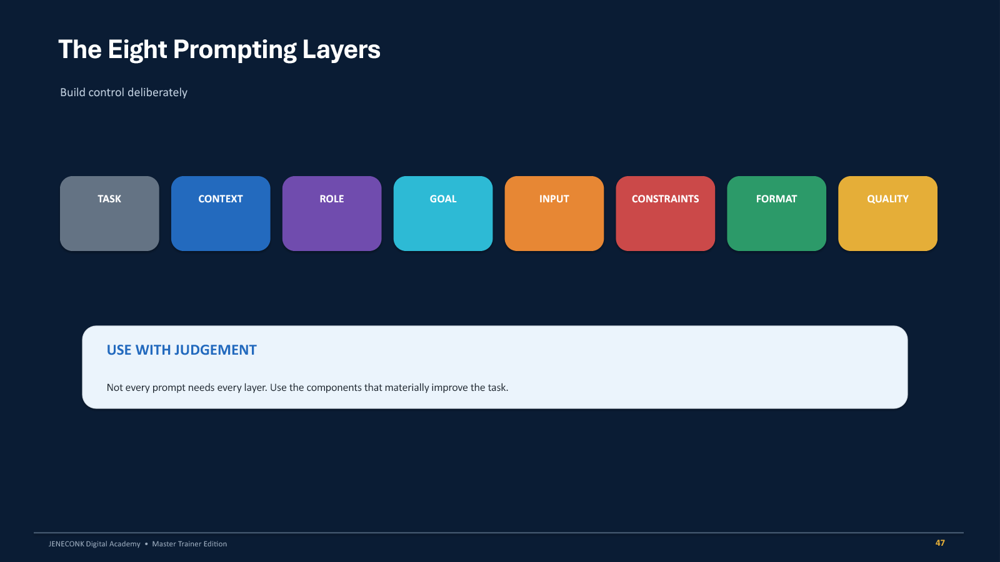
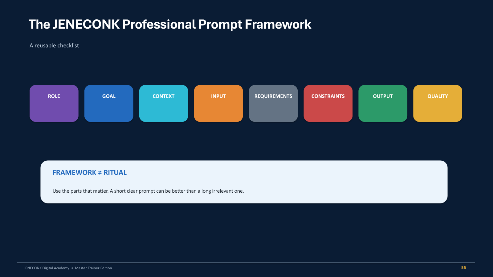
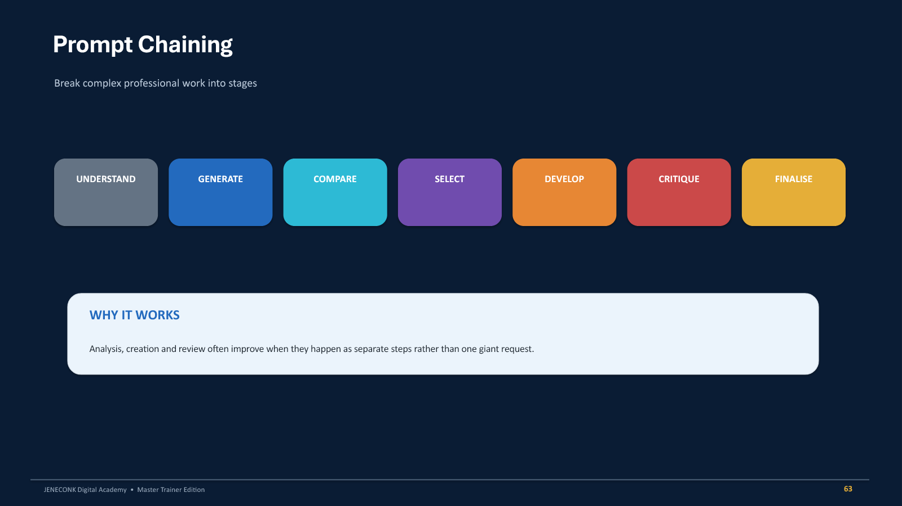
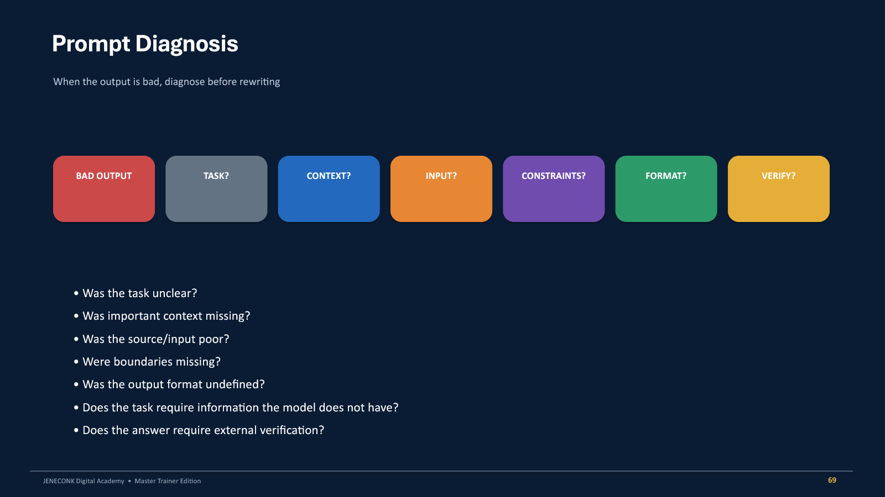
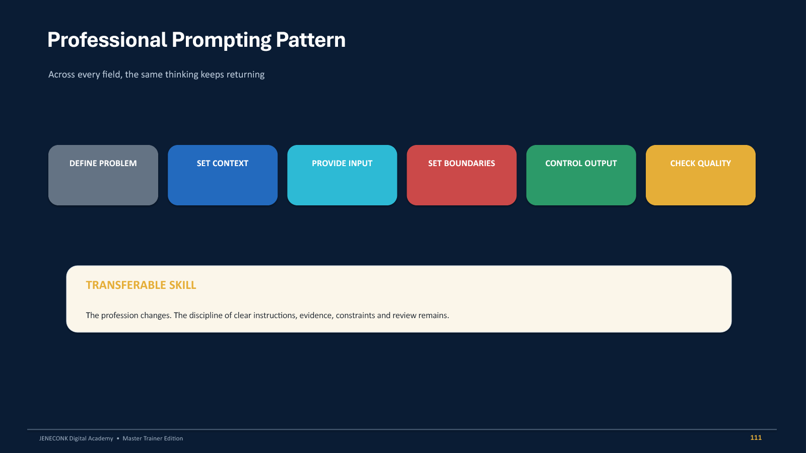

How to use this guide
This guide is built around two connected skills. The first is AI literacy: understanding the technology well enough to choose suitable uses, recognise limitations and keep human responsibility in the workflow. The second is professional prompting: communicating the task, evidence, boundaries and quality standard clearly enough to produce an output that can be reviewed and used.
Read Module 1 before copying the professional prompts. A polished prompt is not a substitute for judgement. The most valuable habit is to ask what part of the work needs interpretation, what part can follow a rule, what information the system may use, what could go wrong and who must approve the result.
Run the short experiments, compare weak and stronger prompts, save both versions and record which instruction changed the result. Improvement becomes visible when you keep evidence.
Use AI where its strengths fit the task, not simply because AI is available. Keep consequential decisions under appropriate human control.
Do not place passwords, access tokens, confidential documents, private customer records, sensitive learner or medical information, examination materials, contracts or proprietary code into an AI system without authority and an approved handling process.
Module 1: Understand AI before using it
What artificial intelligence means
Artificial intelligence refers to computer systems designed to perform tasks that normally require human intelligence. These tasks include understanding language, recognising patterns, analysing information, making predictions, generating content and helping people make decisions. AI is a broad field. A chatbot, image generator, recommendation tool or fraud detector is an application of AI, not the entire field.
Machine learning develops patterns from examples instead of relying only on rules written one by one. Deep learning uses multi-layer neural networks to learn complex patterns. Generative AI creates new text, images, audio, video, code or other content from the capability already learned during training. Your prompt does not train the model from the beginning; it guides how that existing capability is applied to the current task.
| Category | Question it answers | Examples |
|---|---|---|
| Predictive AI | What is likely to happen? | Fraud risk, demand forecasting, equipment failure, customer churn. |
| Generative AI | What useful content can be created? | Email, lesson, image, code, proposal, quiz or video concept. |
| Rule-based automation | What fixed action follows this trigger? | Save a form response, send an email, create a reminder or route a record. |
| AI-assisted automation | What needs interpretation before the action? | Classify a message, extract fields, draft a response and route it for approval. |
AI model, application, chatbot and agent
An AI model provides the underlying capability. An application adds the interface and may also add file handling, memory, web access, image generation, voice, automation and integrations. Two applications may use related model families while offering very different workflows. This is why comparing only the visible chat window can be misleading.
A chatbot primarily responds to the current request. An agentic workflow pursues a defined goal through a sequence such as understand, plan, choose a tool, take an authorised action, check the result and decide the next step. An agent should operate within explicit permissions. It should not receive unlimited authority merely because it can use tools.
A chatbot can draft a polite response. An authorised workflow may identify the customer, find the transaction, locate the invoice, check whether it was sent, request approval where required, send it and update the record. The second process combines reasoning, tools, rules, permissions and audit history.
AI and automation are not the same
Automation handles repeatable actions. AI interprets, classifies, predicts or generates. A useful workflow may contain both. For example, AI may classify an incoming email, while ordinary automation routes the message to the correct team and starts a response deadline. A human may still be required before a refund, disciplinary decision, payment or sensitive communication.
Choose a repetitive process from work, school, business or home. Mark each step as ordinary automation, AI useful, human judgement required, or AI plus automation. Keep the map; it becomes the starting point for a safer automation design.
What AI does well and where it fails
AI can process large quantities of information, recognise patterns, classify content, draft and restructure documents, extract fields, generate alternatives, transform language and assist repetitive knowledge work. These strengths are valuable when the task and review process are clear.
Fluent output can still be wrong. AI may invent references, misstate laws or statistics, calculate incorrectly, misread an image, follow an ambiguous instruction badly, present unsupported assumptions confidently or reproduce bias from data and framing. A plausible-looking but false or unsupported answer is commonly called a hallucination. Confidence is not evidence.
| Consequence | Minimum review | Typical example |
|---|---|---|
| Low | Quick human review | Ideas, draft captions or alternative headings. |
| Medium | Compare against reliable sources | Business requirements, product comparisons or policy summaries. |
| High | Check an authoritative primary source | Regulatory requirements, contracts or current official guidance. |
| Critical | Qualified human plus authoritative sources | Medical, legal, financial, safeguarding or employment decisions. |
Ask for five references on a narrow topic, then ask the system to verify each reference individually and separate them into verified, uncertain and unverified. Never treat the first generated list as proof of itself.
Six habits for responsible AI use
- Accuracy: verify important information before acting on it.
- Privacy: protect personal, confidential and proprietary information.
- Human oversight: keep responsibility for consequential decisions.
- Transparency: disclose meaningful AI involvement where appropriate.
- Fairness: look for biased assumptions and unequal treatment.
- Intellectual property and safety: respect ownership, licensing, permissions and safe-use boundaries.
Module 2: Prompt engineering for professional work
What is a prompt?
A prompt is the information and instruction supplied to an AI system. It may contain a task, question, background, source material, examples, rules, constraints and an output format. Professional prompting is structured communication. It is not magic wording, and it cannot give a model information or authority it does not have.
Weak: Write about cybersecurity.
Stronger: Explain cybersecurity to a 12-year-old using five examples from everyday internet use. Avoid technical jargon. End with five safety rules.
The stronger version identifies the audience, the number and type of examples, a language boundary and the final structure. That control makes the output easier to judge. Missing context forces the system to infer which audience, purpose, channel, tone and next action you intended.

The eight prompting layers
| Layer | Purpose | Useful question |
|---|---|---|
| Task | States the action. | What exactly should the system do? |
| Context | Explains the situation. | What background changes the answer? |
| Role | Sets a relevant perspective. | What professional lens is useful? |
| Goal | Defines the result that matters. | What should improve or become possible? |
| Input | Separates source material from instructions. | What document, data, message or image is being used? |
| Constraints | Protects boundaries. | What must not be invented, changed or exceeded? |
| Format | Controls organisation. | Should the answer be a table, brief, checklist or script? |
| Quality | Defines what a good answer must satisfy. | What should the system check before finishing? |
The JENECONK Professional Prompt Framework
The reusable framework is: Role, Goal, Context, Input, Requirements, Constraints, Output and Quality. It is a checklist, not a ceremony. A short, clear prompt can be better than a long irrelevant one. Include a component only when it reduces a meaningful uncertainty or protects the work.

ROLE: Act as a relevant professional assistant.
GOAL: State the result that matters.
CONTEXT: Explain the audience, situation and channel.
INPUT: Clearly mark the material to analyse or transform.
REQUIREMENTS: List the essential content or steps.
CONSTRAINTS: State limits and what must remain unchanged.
OUTPUT: Define the structure, length or file-ready format.
QUALITY: Ask for checks tied to the real objective.Start with a weak request such as "write an advert", "make a lesson", "edit this photo" or "analyse this data". Add at least six useful framework components. Run both versions and compare specificity, assumptions and usability.
Prompting techniques that improve difficult work
- Few-shot prompting: show labelled examples when the system must follow a category, style or unusual edge case.
- Iterative prompting: create, critique, refine, shorten and adapt instead of restarting without learning from the first result.
- Prompt chaining: separate understanding, generation, comparison, selection, development, critique and finalisation.
- Grounding: require the answer to use only supplied source material and identify where each conclusion comes from.
- Critique prompting: ask for weaknesses and corrections before asking for a rewrite.
- Negative boundaries: explain what must not change, while still describing the desired result positively.
- Prompt diagnosis: identify which missing component caused the failure before randomly rewording the request.

Grounding and verification
Using only the attached employee handbook, explain the annual
leave entitlement for permanent employees.
For every conclusion, identify the relevant section.
If the handbook does not answer something, write:
"Not stated in the supplied policy."
Do not fill gaps using general employment practices.Grounding narrows the evidence base. It does not automatically prove that the source itself is correct, current or complete. Verification remains a separate step, and the level of verification should rise with the consequence of error.
Critique before rewriting
Critique the proposal you just produced.
Look specifically for unsupported assumptions, missing costs,
unclear responsibilities, weak implementation steps,
contradictions, risks and unrealistic timelines.
Do not rewrite it yet. Return only the weaknesses and
recommended corrections.This separates diagnosis from production. When both are requested in one step, a system may silently fix some issues while hiding others. A visible critique gives the reviewer an audit trail and a better basis for approving the rewrite.

Ten professional prompting labs
Each lab starts with a vague request, identifies why it fails and rebuilds the instruction around real professional requirements. Open a lab, adapt the prompt to your work and keep both the original and improved output for comparison.
1. Photography: protect identity during portrait retouching
Weak: Make this picture beautiful.
Define the editorial standard, permitted corrections, identity lock, prohibited changes and realism check. Preserve facial identity, age, skin tone, body shape, hairstyle and distinguishing features. Avoid reshaping, skin-colour changes, plastic texture and invented accessories.
Exercise: create two versions by changing only the lighting instruction. Compare identity, skin texture, mood and realism.
2. Graphic design: request directions before artwork
Weak: Create a nice AI flyer.
State the project, audience, core message, headline, supporting message and design direction. Ask for three clearly different creative directions before final artwork. This creates a decision point before time is spent rendering the wrong idea.
Exercise: select one direction, then request layout, typography hierarchy, image direction, CTA placement and mobile readability.
3. Education: align a 40-minute lesson
Weak: Teach arithmetic progression.
Specify class, topic, duration, prior knowledge, measurable outcome, available resources, lesson structure and assessment. Require realistic timings and check that every activity and assessment item supports the outcome.
Exercise: confirm the timings total 40 minutes and every assessment item measures the stated learning outcome.
4. Administration: turn notes into an executive brief
Weak: Clean up these meeting notes.
ROLE: Act as an experienced executive administrative officer.
TASK: Convert the notes into a management brief.
EXTRACT: Decisions, actions, owners, deadlines, unresolved issues
and items requiring approval.
IMPORTANT: Do not invent missing names, dates or decisions.
For missing information write: TO BE CONFIRMED.
OUTPUT: Executive summary, decisions, outstanding matters
and an Action Tracker table.
INPUT: [PASTE NOTES]5. Data analysis: inspect before analysing
Weak: Analyse this spreadsheet.
ROLE: Act as a senior data analyst.
TASK: Inspect the attached dataset. Do not analyse it yet.
FIRST IDENTIFY: Columns, data types, missing values, duplicates,
inconsistent categories, impossible values, potential outliers,
formatting problems and fields requiring clarification.
IMPORTANT: Do not silently modify the dataset.
OUTPUT: Data Quality Report and proposed Cleaning Plan.
Wait for approval before cleaning or analysis.6. Software development: plan before code
Weak: Build me a maths app.
Ask first for the problem statement, target users, user journeys, core features, pages, roles, data requirements, security considerations, MVP scope and postponed features. Coding begins only after the specification and implementation plan are approved.
7. Marketing: lead with the customer problem
Weak: Advertise my product.
Define the product, target audience, customer problem, solution and campaign goal. Request hooks, headline directions, channel-specific posts, a short video script and CTA. Remove empty hype and check that every piece connects the customer's problem to a clear benefit.
8. Research: extract only from the supplied source
Weak: Summarise this paper.
Define the fields to extract, require a location for every extracted point and prohibit outside knowledge. For absent information, use a fixed label such as NOT STATED IN THE SUPPLIED DOCUMENT. Do not silently correct the author's methodology.
9. Customer service: classify, respond and escalate
Weak: Reply to this customer.
Classify the message first, identify the customer's need, draft an appropriate response and name the internal action. Prohibit unauthorised refunds, invented transactions, unapproved deadlines and exposure of confidential information. Mark cases that require human approval.
10. Automation: map the workflow before choosing tools
Weak: Automate our visitor follow-up.
Map the trigger, captured information, decisions, people, assignment rules, actions, messages, waiting periods, reminders, escalations, approvals, completion condition and stored records. Show the current manual workflow, then the proposed workflow, then identify where AI is useful and where ordinary rules are sufficient. Choose software only after the process is understood.

Capstone: build a professional prompt in your field
- Choose one real task with a useful, reviewable output.
- Write Version 1 using Role, Goal, Context, Input, Requirements, Constraints, Output Format and Quality Check.
- Run it and save the output without hiding weaknesses.
- Critique the result. Identify unsupported assumptions, missing information and poor boundaries.
- Diagnose which prompt component caused each weakness.
- Improve only the instructions that need correction and run Version 2.
- Compare what changed, which instruction had the greatest effect and what still requires human judgement.
Define the problem, set context, provide input, set boundaries, control the output and check quality. The profession changes; disciplined communication and review remain.
Frequently asked questions
What is prompt engineering?
Prompt engineering is the practice of giving an AI system clear tasks, context, inputs, requirements, boundaries, formats and quality checks. The aim is not to find a magical phrase. It is to reduce ambiguity and make the output more useful and reviewable.
Do professional prompts have to be long?
No. Use the parts that matter. A direct instruction may be enough for a simple, low-risk task. Add context, evidence, constraints and review criteria when the work becomes more specific, consequential or difficult.
Can a better prompt stop hallucinations?
It can reduce unsupported output by grounding the answer, forbidding invention and requiring uncertainty labels. It cannot guarantee truth. Important claims still need verification against reliable sources or qualified professionals.
What is the difference between AI and automation?
AI interprets, predicts, classifies or generates. Automation performs repeatable actions based on triggers and rules. A good workflow may use AI to interpret a message, automation to route it and a human to approve a consequential action.
Should confidential documents be uploaded to AI tools?
Only when you have authority, the organisation has approved the system and the information-handling process is suitable. Remove unnecessary personal information and never expose credentials, access tokens or restricted records.
What should I learn after these two modules?
Continue into AI research and verification, professional image generation, video, application building, automation, connected workflows and agentic systems. Apply the same habits of evidence, permissions, boundaries and human review.
Continue learning with JENECONK
These two modules form the foundation of the JENECONK Advanced AI & Automation pathway: first understand the technology, then communicate with it professionally. Continue through the JENECONK AI Training Academy overview, visit the live AI Training Academy, or explore related guides for prompt engineering for teachers, AI in office administration and AI-powered data analysis.